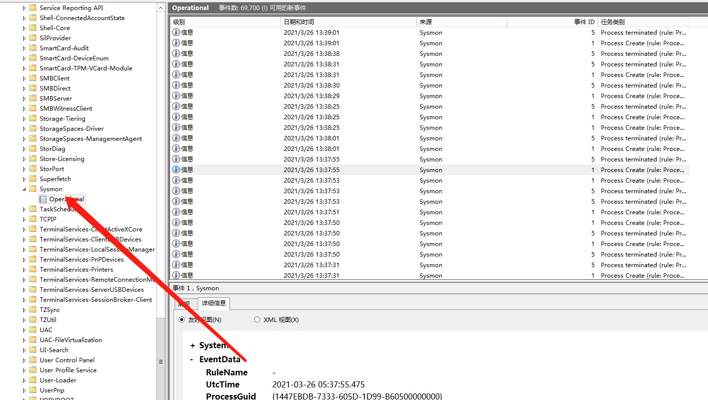

介绍
https://docs.microsoft.com/zh-cn/sysinternals/downloads/sysmon
Sysmon是微软的一款免费的轻量级系统监控工具。它通过系统服务和驱动程序实现记录进程创建，网络连接以及文件创建时间更改的详细信息，并把相关的信息写入并展示在windows的日志事件里。我们可以通过读取Windows的日志，了解Windows的安全状态。
Sysmon安装后分为用户态系统服务，即ring3层的exe， 驱动（Flt的minifilter）两部分，下面开始上篇的讲解，ring3实现对网络数据记录以及对驱动返回的数据进行解析，而驱动部分则返回进程相关的信息以及进程访问文件注册表的数据给ring3，我们首选讲解ring3的实现原理。用户态通过ETW(Event Tracing for Windows)实现对网络数据记录，通过EventLog对驱动返回的数据进行解析，驱动部分则通过进、线程，模块的回调函数收集进程相关的信息，通过Minifilter文件过滤驱动和注册表回调函数记录访问文件、注册表的数据。
从功能上来讲，Sysmon是一款优秀的HIDS、EDR的主机入侵检测引擎，其依托于Windows内核层进、线程，模块，注册表回调，及文件过滤驱动针对相应的行为进行实时的增、删、改信息收集并通过ETW存储并展示于Windows日志。
安装
下载地址
https://download.sysinternals.com/files/Sysmon.zip
Install: Sysmon.exe -i <configfile>
[-h <[sha1|md5|sha256|imphash|*],...>] [-n [<process,...>]]
[-l (<process,...>)]
Configure: Sysmon.exe -c <configfile>
[--|[-h <[sha1|md5|sha256|imphash|*],...>] [-n [<process,...>]]
[-l [<process,...>]]]
Uninstall: Sysmon.exe -u
-c 更新或显示配置
-h 指定hash记录的算法
-i 安装，可用xml文件来更新配置文件
-l 记录加载模块，可指定进程
-m 安装事件清单
-n 记录网络链接
-r 检测证书是否撤销
-u 卸载服务和驱动
一键安装：
sysmon -accepteula –i -n 指定配置文件（安装时请用-i）
sysmon -c xxx.xml 注：安装需要管理员权限并重启，windows 7 或者以上，服务器系统windows server 2012 及以上。
配置样例
<Sysmon schemaversion="4.21">
<!-- Capture all hashes -->
<HashAlgorithms>*</HashAlgorithms> <!--哈希配置(默认使用sha1) -->
<EventFiltering> <!--事件筛选-->
<!-- Log all drivers except if the signature -->
<!-- contains Microsoft or Windows -->
<DriverLoad onmatch="exclude"> <!--默认记录所有日志 除非标记 ? -->
<Signature condition="contains">microsoft</Signature>
<Signature condition="contains">windows</Signature>
</DriverLoad>
<!-- Do not log process termination -->
<!--不记录进程终止-->
<ProcessTerminate onmatch="include" />
<!-- Log network connection if the destination port equal 443 -->
<!-- or 80, and process isn't InternetExplorer -->
<NetworkConnect onmatch="include">
<DestinationPort>443</DestinationPort> <!-- 记录443 端口连接记录-->
<DestinationPort>80</DestinationPort>
</NetworkConnect>
<NetworkConnect onmatch="exclude">
<Image condition="end with">iexplore.exe</Image>
</NetworkConnect>
</EventFiltering>
</Sysmon>
-- 配置条目直接位于Sysmon 标签下, 过滤器位于 EventFiltering 标签下
一些配置规则
https://github.com/sametsazak/sysmon.git
https://github.com/SwiftOnSecurity/sysmon-config
https://github.com/ion-storm/sysmon-config
ProcessCreate 进程创建
FileCreateTime 文件创建时间更改
NetworkConnect 检测到网络连接
ProcessTerminate 进程终止
DriverLoad 驱动程序已加载
ImageLoad 镜像加载
CreateRemoteThread 已检测到创建远程线程
RawAccessRead 检测到原始访问读取
ProcessAccess 已访问的进程
FileCreate 文件创建
RegistryEvent 添加或删除注册表对象
RegistryEvent 注册表值设置
RegistryEvent 注册表对象已重命名
FileCreateStreamHash 已创建文件流
PipeEvent 管道创建
PipeEvent 管道已连接
WmiEvent 检测到WmiEventFilter活动 -- WmiEventFilter activity detected
WmiEvent 检测到WmiEventConsumer活动 -- WmiEventConsumer activity detected
WmiEvent 检测到WmiEventConsumerToFilter活动 -- WmiEventConsumerToFilter activity
DnsQuery DNS查询
我们可以使用 winlogbeat采集到elk，也可以使用wazuh完成数据日志采集，然后用来分析
我们也可以使用一些工具辅助我们分析，如下：
Sysmon View：Sysmon日志可视化工具
Sysmon Shell：Sysmon配置文件生成工具
Sysmon Box：Sysmon和网络捕获日志记录工具
https://github.com/nshalabi/SysmonTools
部署
安装并且把Auto_Update.bat，自动更新加入定时任务,把相关的地址替换一下
@echo off
setlocal
set hour=%time:~0,2%
set minute=%time:~3,2%
set /A minute+=2
if %minute% GTR 59 (
set /A minute-=60
set /A hour+=1
)
if %hour%==24 set hour=00
if "%hour:~0,1%"==" " set hour=0%hour:~1,1%
if "%hour:~1,1%"=="" set hour=0%hour%
if "%minute:~1,1%"=="" set minute=0%minute%
set tasktime=%hour%:%minute%
mkdir C:\windows\sysmon
pushd "C:\windows\sysmon\"
echo [+] Downloading Sysmon...
@powershell (new-object System.Net.WebClient).DownloadFile('https://gitee.com/njcx86/sysmon-config/raw/master/Sysmon64.exe','C:\windows\sysmon\sysmon64.exe')"
echo [+] Downloading Sysmon config...
@powershell (new-object System.Net.WebClient).DownloadFile('https://gitee.com/njcx86/sysmon-config/raw/master/sysmonconfig-export.xml','C:\windows\sysmon\sysmonconfig-export.xml')"
@powershell (new-object System.Net.WebClient).DownloadFile('https://gitee.com/njcx86/sysmon-config/raw/master/Auto_Update.bat','C:\windows\sysmon\Auto_Update.bat')"
sysmon64.exe -accepteula -i sysmonconfig-export.xml
sc failure Sysmon64 actions= restart/10000/restart/10000// reset= 120
echo [+] Sysmon Successfully Installed!
echo [+] Creating Auto Update Task set to Hourly..
SchTasks /Create /RU SYSTEM /RL HIGHEST /SC HOURLY /TN Update_Sysmon_Rules /TR C:\ProgramData\sysmon\Auto_Update.bat /F /ST %tasktime%
timeout /t 10
exit
Auto_Update.bat
@echo on
cd C:\ProgramData\sysmon\
@powershell (new-object System.Net.WebClient).DownloadFile('https://gitee.com/njcx86/sysmon-config/raw/master/sysmonconfig-export.xml','C:\windows\sysmon\sysmonconfig-export.xml')"
sysmon64 -c sysmonconfig-export.xml
exit

然后安装 Winlogbeat
https://artifacts.elastic.co/downloads/beats/winlogbeat/winlogbeat-7.8.0-windows-x86_64.zip

output.kafka: # initial brokers for reading cluster metadata hosts: ["172.21.129.2:9092"] topic: 'win-hids'
./kafka-console-consumer.sh --bootstrap-server 172.21.129.2:9092 --topic win-hids